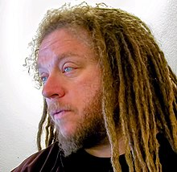

What Turned Jaron Lanier Against the Web?
Jaron Zepel Lanier (born May 3, 1960) is an American computer philosophy writer, computer scientist, visual artist, and composer of contemporary classical music. Considered a founder of the field of virtual reality,[2] Lanier and Thomas G. Zimmerman left Atari in 1985 to found VPL Research, Inc., the first company to sell VR goggles and gloves. In the late 1990s, Lanier worked on applications for Internet2, and in the 2000s, he was a visiting scholar at Silicon Graphics and various universities. In 2006 he began to work at Microsoft, and from 2009 has worked at Microsoft Research as an Interdisciplinary Scientist.
Lanier has composed contemporary classical music and is a collector of rare instruments (of which he owns one to two thousand[4]); his acoustic album, Instruments of Change (1994) features Asian wind and string instruments such as the khene mouth organ, the suling flute, and the sitar-like esraj. Lanier teamed with Mario Grigorov to compose the soundtrack to the documentary film The Third Wave (2007). In 2010, Lanier was nominated in the TIME 100 list of most influential people.[5]
Early life and education (1960–1982)
Born Jaron Zepel Lanier[6] in New York City, Lanier was raised in Mesilla, New Mexico.[7][8] Lanier's mother and father were Jewish;[9] his mother was a concentration camp survivor from Vienna and his father's family had emigrated from Ukraine to escape the pogroms.[10] When he was nine years old, his mother was killed in a car accident. He lived in tents for an extended period with his father before embarking on a seven-year project to build a geodesic dome home that he helped design.[11][12] At the age of 13, Lanier convinced New Mexico State University to let him enroll. At NMSU, he took graduate-level courses; he received a grant from the National Science Foundation to study mathematical notation, which led him to learn computer programming.[13] From 1979 to 1980, the NSF-funded project at NMSU focused on "digital graphical simulations for learning". Lanier also attended art school in New York during this time, but returned to New Mexico and worked as an assistant to a midwife.[14] The father of a baby he helped deliver gave him a car as a gift; Lanier drove the car to Santa Cruz.
Atari Labs, VPL Research (1983–1990)
In California, Lanier worked for Atari, where he met Thomas Zimmerman, inventor of the data glove. After Atari Inc. was split into two companies in 1984, Lanier became unemployed. The free time enabled him to concentrate on his own projects, including VPL, a "post-symbolic" visual programming language. Along with Zimmerman, Lanier founded VPL Research, focusing on commercializing virtual reality technologies; the company prospered for a while, but filed for bankruptcy in 1990.[8] In 1999, Sun Microsystems bought VPL's virtual reality and graphics-related patents.
Internet2, visiting scholar (1997–2001)
From 1997 to 2001, Lanier was the Chief Scientist of Advanced Network and Services, which contained the Engineering Office of Internet2, and served as the Lead Scientist of the 'National Tele-immersion Initiative', a coalition of research universities studying advanced applications for Internet2. The Initiative demonstrated the first prototypes of tele-immersion in 2000 after a three-year development period. From 2001 to 2004, he was Visiting Scientist at Silicon Graphics Inc., where he developed solutions to core problems in telepresence and tele-immersion. He was also visiting scholar with the Department of Computer Science at Columbia University (1997–2001), a visiting artist with New York University's Interactive Telecommunications Program, and a founding member of the International Institute for Evolution and the Brain.
Family
Jaron Lanier and his wife, Lena, have one child, a daughter.
Selected list of works in prose
"One-Half of a Manifesto" (2000)
In "One-Half a Manifesto", Lanier criticizes the claims made by writers such as Ray Kurzweil, and opposes the prospect of so-called "cybernetic totalism", which is "a cataclysm brought on when computers become ultra-intelligent masters of matter and life."[19][20] Lanier's position is that humans may not be considered to be biological computers, i.e., they may not be compared to digital computers in any proper sense, and it is very unlikely that humans could be generally replaced by computers easily in a few decades, even economically. While transistor count increases according to Moore's law, overall performance rises only very slowly. According to Lanier, this is because human productivity in developing software increases only slightly, and software becomes more bloated and remains as error-prone as it ever was. "Simply put, software just won't allow it. Code can't keep up with processing power now, and it never will."[21] At the end he warns that the biggest problem of any theory (esp. ideology) is not that it is false, "but when it claims to be the sole and utterly complete path to understanding life and reality." The impression of objective necessity paralyzes the ability of humans to walk out of or to fight the paradigm and causes the self-fulfilling destiny which spoils people.
Post-symbolic communication (2006)
Some of Lanier's speculation involves what he calls "post-symbolic communication." In his April 2006 Discover magazine column, he writes about cephalopods (i.e., the various species of octopus, squid, and related molluscs), many of which are able to morph their bodies, including changing the pigmentation and texture of their skin, as well as forming complex shape imitations with their limbs. Lanier sees this behavior, especially as exchanged between two octopodes, as a direct behavioral expression of thought.
Wikipedia and the omniscience of collective wisdom (2006)
In his online essay "Digital Maoism: The Hazards of the New Online Collectivism", in Edge magazine in May 2006, Lanier criticized the sometimes-claimed omniscience of collective wisdom (including examples such as the Wikipedia article about him, which he said recurrently exaggerates his film directing work), describing it as "digital Maoism".[23] He writes "If we start to believe that the Internet itself is an entity that has something to say, we're devaluing those people [creating the content] and making ourselves into idiots."